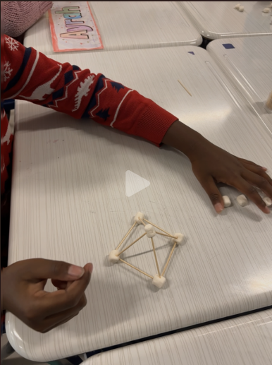
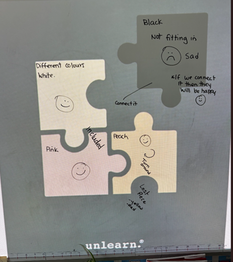
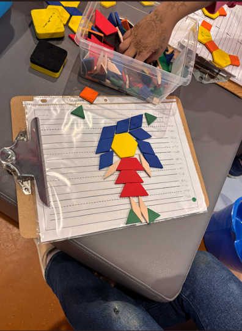
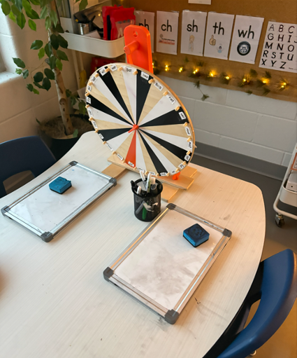
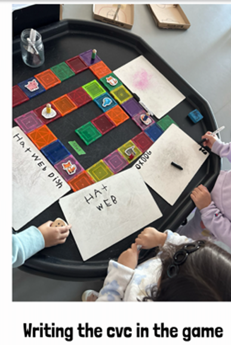
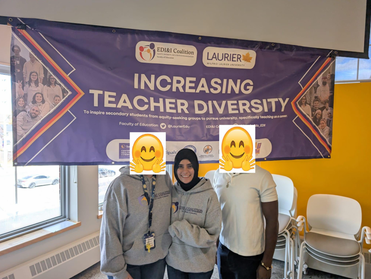
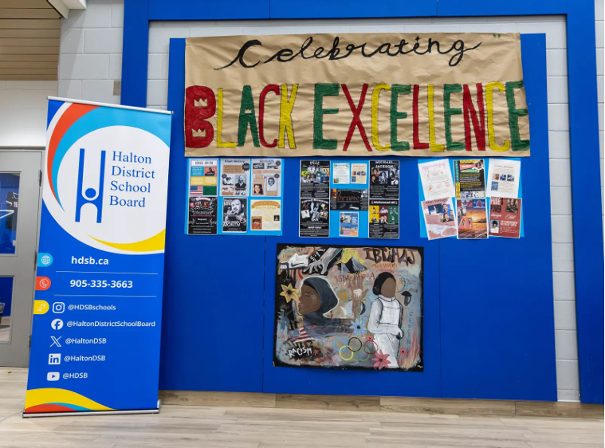

Standards of Practice
Commitment to Students
Professional Knowledge
Professional Practice
Leadership in Communities
Ongoing Learning
Commitment to Students
and Student Learning
I demonstrate my commitment to students and student learning by creating an inclusive and supportive classroom environment where every learner feels valued, respected, and capable of success. In my daily practice, I support students' social-emotional well-being by building positive relationships, encouraging student voice, and promoting a sense of belonging within the classroom community. I recognize that students bring diverse experiences, identities, and learning needs, and I intentionally design learning experiences that acknowledge and respect those differences.
In my daily lessons, I support diverse learners by adapting instruction, using visual supports, and providing individualized guidance when needed. I incorporate strategies such as step-by-step instructions, visual cues, and hands-on materials to help students better understand concepts and feel confident participating in learning activities. These approaches allow students to engage with content in ways that support their strengths while also building independence and confidence.
I also prioritize creating a positive classroom culture where students feel comfortable sharing ideas, asking questions, and learning from one another. Through discussions and collaborative activities, students are encouraged to practice empathy, respect, and cooperation. By fostering strong relationships and promoting an inclusive classroom environment, I aim to support both the academic growth and the social-emotional development of every learner.
Mathematics Integration - Artifact #1
During my practicum in a Grade 2 classroom, I demonstrated my commitment to student learning by designing engaging, hands-on lessons that supported different learning styles. During a mathematics unit connected to the Ontario Curriculum, students explored geometric concepts such as lines of symmetry and three-dimensional structures. For example, students first investigated symmetry by folding shapes and identifying lines of symmetry through discussion and visual exploration. They then applied their understanding of shapes and spatial reasoning by working in small groups to build the strongest structure possible using marshmallows and sticks. This hands-on activity encouraged students to experiment with different geometric designs while developing collaboration, problem-solving, and critical thinking skills. It also helped students strengthen their understanding of geometric attributes, visualize how shapes can form stable structures, and build confidence in sharing their ideas and working together to solve challenges.


Equity & Inclusion - Artifact #2
In my Kindergarten placement, I planned and facilitated play-based learning experiences that integrated literacy, inquiry, and social learning. During Black History Month, I supported students in learning about diversity, fairness, and respect through age-appropriate discussions and visual resources. I incorporated the Unlearn posters to introduce ideas about kindness, inclusion, and challenging stereotypes in a way that was accessible for young learners. Through guided discussions, picture exploration, and collaborative drawing activities, students shared their thoughts about fairness, friendship, and treating others with respect. These experiences encouraged students to express their ideas, ask questions, and begin developing an understanding of equity and inclusion within their classroom community.
Professional Knowledge
My instructional planning and classroom practice are guided by current research, learning theory, curriculum expectations, and professional standards to support all learners effectively. I regularly draw on evidence from child development, literacy and numeracy research, and culturally responsive teaching to inform my decision-making. This allows me to design inclusive, differentiated, and engaging learning experiences that meet students' diverse needs while promoting social-emotional growth, academic confidence, and critical thinking (National Reading Panel [NRP], 2000; Gay, 2010; Vygotsky, 1978).

Artifact #1
In Grade 2, I applied research-based strategies in a three-week mathematics unit on geometry. Students explored lines of symmetry and built three-dimensional structures using marshmallows and sticks, combining hands-on manipulatives with spatial reasoning tasks. This approach drew on research supporting experiential learning and manipulatives to strengthen conceptual understanding in mathematics (Clements & Sarama, 2011). Students benefited from visualizing geometric concepts, experimenting with different designs, and collaborating with peers, which enhanced problem-solving skills, engagement, and confidence in applying mathematical reasoning.
Artifact #2
In Kindergarten, I integrated research on early literacy, play-based learning, and computational thinking to support student growth. One activity involved spinning a wheel with CVC words, where students would write the word they landed on, combining phonics practice with word recognition, sequencing, and problem-solving skills (Bers, 2018; National Reading Panel, 2000). During Black History Month, I also used the Unlearn posters and age-appropriate discussions to introduce ideas about fairness, inclusion, and respect. These activities were informed by culturally responsive and anti-bias education research (Derman-Sparks & Edwards, 2010; Gay, 2010) and helped students develop literacy, critical thinking, and social-emotional skills in a meaningful, engaging context.

References
Bers, M. U. (2018). Coding as a playground: Programming and computational thinking in the early childhood classroom. Routledge.
Derman-Sparks, L., & Edwards, J. O. (2010). Anti-bias education for young children and ourselves (2nd ed.). National Association for the Education of Young Children (NAEYC).
Gay, G. (2010). Culturally responsive teaching: Theory, research, and practice (2nd ed.). Teachers College Press.
National Reading Panel. (2000). Teaching children to read: An evidence-based assessment of the scientific research literature on reading and its implications for reading instruction. National Institute of Child Health and Human Development.
Professional Practice
I design and deliver differentiated, student-centered lessons that respond to the diverse needs of learners. During my practicum, I utilized manipulatives, technology, and multimodal approaches to support learning in both literacy and mathematics. In literacy, for example, students engaged in Cloze activities that encouraged predicting, reasoning, and collaboratively constructing meaning, supporting comprehension and oral language development.
In a Kindergarten classroom, I intentionally integrated coding concepts with language learning, allowing students to develop early computational thinking alongside communication skills. One example was a CVC word coding game, where students guided a character along a path and, when landing on a square, read and wrote the CVC word. Through this activity, students practiced phonics, word recognition, sequencing, and problem-solving while applying their literacy skills in an interactive, playful context. They also developed collaboration, confidence, and expressive language skills by sharing strategies and discussing the words they landed on.
These experiences demonstrate my commitment to inclusive, inquiry-based instruction that values multiple entry points for learning. By using varied instructional strategies, hands-on materials, and ongoing formative assessment, I supported student engagement, encouraged collaboration, and maximized learning opportunities for all students.

Leadership in Learning Communities
I demonstrate leadership in learning communities by actively contributing to collaborative, supportive, and inclusive environments across classrooms, schools, and the wider community. I work closely with colleagues, educational assistants, and families to plan and implement learning experiences that meet diverse student needs, while also engaging in professional dialogue to share ideas and strategies.
I actively contribute to collaborative and supportive learning environments across classroom, school, and community contexts. During my practicum, I led small-group learning activities, facilitated peer discussions, and supported collaborative problem-solving among students.
Beyond the classroom, I participated as one of three panelists at a professional learning event at Wilfrid Laurier University focused on Equity, Diversity, and Inclusion (EDI), where I shared strategies related to teacher diversity and inclusive classroom practices. I also volunteered at a similar EDI-focused event in Brantford in 2026, collaborating with educators to advocate for equitable practices across the educational community.

Artifact #2
I contributed to the development of EQAO preparation resources for students in Grades 3 and 6, designed specifically for parents and caregivers in multiple languages, including Urdu, Arabic, and Spanish.
By creating accessible materials, families who might otherwise face language barriers were better able to support their children's learning at home. This initiative helped students feel more confident by providing consistent practice opportunities and strengthening the home–school connection.
This work reflects my commitment to shared leadership, equity, and responsiveness to community needs, highlighting the importance of collaboration with families to support student success.
Ongoing Professional Learning
I recognize that ongoing professional learning is essential to effective teaching and to supporting student learning. Professional practice and self-directed learning are informed by experience, research, collaboration, and knowledge. I actively seek opportunities to reflect on my practice, expand my understanding of child development, pedagogy, and inclusive education, and stay current with curriculum, policies, and research. Engaging in professional learning allows me to strengthen my instructional strategies, enhance student engagement, and support diverse learners in meaningful ways.

Brilliant Black Futures Celebration
As an example, I attended Brilliant Black Futures: A Celebration in Honour of Black History Month at Rattlesnake Point Public School, where students, families, and staff came together to celebrate Black excellence and learn about inclusive practices. I also volunteered to assist with event setup, helping create a welcoming and organized environment. The event included storytelling sessions with children's author Yolanda Marshall, interactive learning activities for early learners, and opportunities to observe panels focused on mentorship, leadership, and family engagement. Participating in and supporting this event provided practical insights into culturally responsive teaching, equity-focused practices, and strategies for fostering student engagement and belonging, which I can apply directly in my own classroom practice.